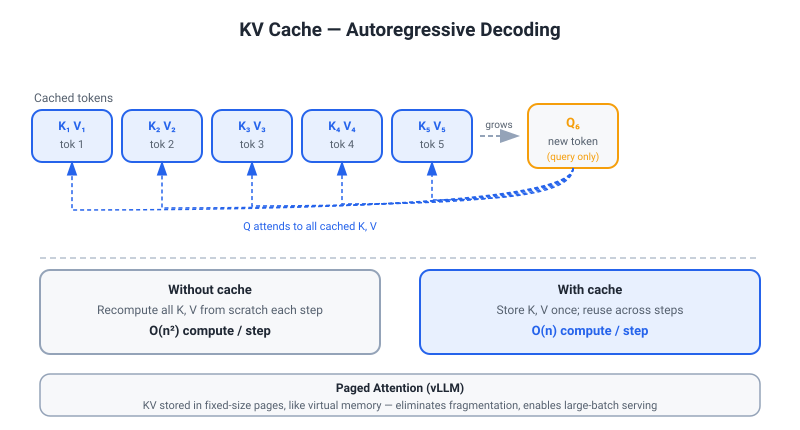
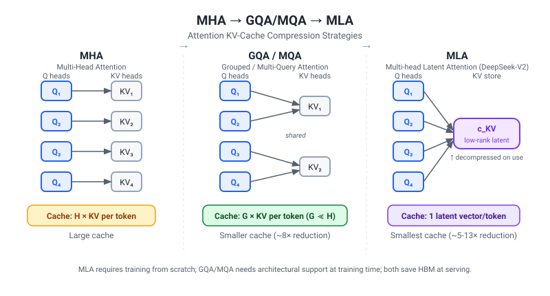
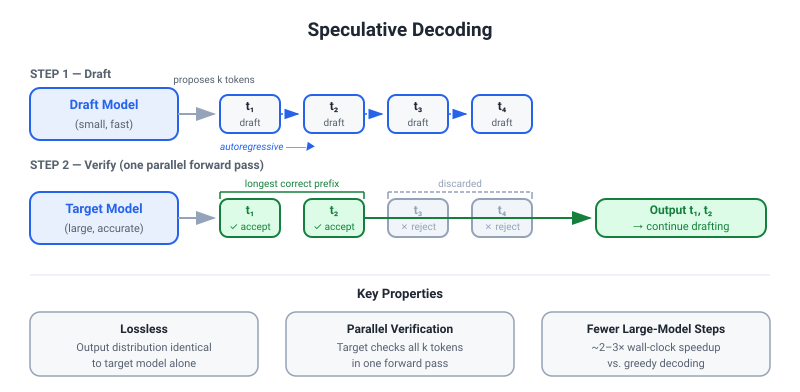

EXPERTISE DEEP DIVE — EFFICIENCY, ROUTING & COMPRESSION
Tony's home turf. This document is designed for 3-follow-up depth on each topic. Every section ends with the hardest adversarial follow-up Versley can throw. PhD-defense standard throughout.
PART 1 — ROUTING THEORY
1.1 Formalizing the Routing Problem
The formal setup. Let Q = {q_1, q_2, ..., q_T} be a sequence of T incoming queries. Let M = {M_1, ..., M_K} be a set of K models ordered by (cost, capability), with M_1 cheapest/weakest and M_K most expensive/strongest. A router R: q -> M_k assigns each query to one model.
Objective: Minimize expected cost C(R) = E[c(M_{R(q)})] subject to E[quality(M_{R(q)}, q)] >= tau, where tau is the minimum acceptable quality threshold and c(M_k) is the per-query cost (API cost, latency, or compute FLOP-equivalent).
This is a constrained optimization over a discrete, combinatorial assignment space. Two fundamentally different statistical frameworks apply depending on whether query outcomes are observed.
1.2 Supervised Classification Router
Tony's approach (TwinRouterBench, MERA). Treat routing as a k-class classification problem. Given a query q, predict which model tier will produce quality >= tau at minimum cost.
Training signal: offline trajectories of (query, model, outcome) tuples, where outcome is a binary or scalar quality label (e.g., task-completion for agentic steps, judge score for generation). A DistilBERT classifier (66M params vs BERT's 110M; 6 layers, 768 hidden, knowledge-distilled from BERT-base via Hinton et al. 2019) encodes the query and predicts the routing label.
Why DistilBERT specifically? Routing latency must not dominate; a 66M-parameter encoder adds ~5-15ms on CPU, negligible vs LLM inference (500ms-5s). Full BERT would be unnecessary; a smaller MLP would lack semantic understanding for nuanced query complexity estimation.
Limitations: - Assumes the label distribution in training trajectories is representative of production queries (covariate shift problem). - Learns a fixed decision boundary; cannot adapt online to model updates (e.g., if M_1 gets an update that makes it stronger). - Cannot explore: if a query type was always routed to M_K in training data, the classifier never learns that M_1 might suffice.
1.3 Contextual Bandit Framing
When is a bandit warranted? A contextual bandit is appropriate when: 1. The label oracle is cheap (outcome is observed quickly after routing). 2. Model capabilities drift over time (model updates, prompt format changes). 3. The training set is sparse for certain query types (exploration needed).
Setup. At each time step t, observe context x_t (query features), choose action a_t in {1,...,K} (model index), observe reward r_t in [0,1] (quality signal). Goal: minimize cumulative regret over T steps:
Regret(T) = sum_{t=1}^{T} [r*(x_t) - r_t]
where r*(x_t) = max_k E[r(x_t, M_k)] is the expected reward of the oracle best action in hindsight.
UCB (Upper Confidence Bound). Choose the model that maximizes:
UCB_k(t) = mu_hat_k(t) + sqrt( alpha * ln(t) / n_k(t) )
where mu_hat_k(t) is empirical mean reward for model M_k on similar queries, n_k(t) is the number of times M_k has been chosen, and alpha is an exploration coefficient. UCB1 (Auer et al. 2002) achieves O(sqrt(KT log T)) regret. Lin-UCB (Li et al. 2010) extends this to contextual settings via a linear reward model per arm.
Thompson Sampling. Maintain a posterior over each model's quality p(theta_k | D_t). At each step, sample theta_k ~ posterior, choose argmax_k E[r | x_t, theta_k]. Thompson Sampling achieves O(sqrt(KT log K)) regret (Agrawal & Goyal 2013) and empirically outperforms UCB in many LLM settings due to better exploration randomization.
Why Tony chose supervised classification instead of bandit for LLM Router. In the agentic step-routing setting (MERA, TwinRouterBench), the cost of exploration is high: a single wrong assignment in a 20-step agentic task can corrupt the entire trajectory. The oracle label (task-step quality) is only partially observable in real time (you need the full task completion signal). Furthermore, the training dataset from strong models provides a reasonably dense coverage of the query space. The supervised classifier thus dominates in expected reward under these constraints. A bandit would be preferred for a production API router where (1) millions of queries per day make exploration cheap, (2) outcome signals are fast (e.g., user click, next-turn continuation), and (3) model updates are frequent.
Formal regret comparison: - Supervised classifier: zero exploration regret if distribution is stationary; O(n^{1/3}) excess risk under distribution shift (VC theory). - Contextual bandit: O(sqrt(KT log T)) regret regardless of stationarity — the regret bound assumes worst-case, so it's not automatically better in the stationary case.
1.4 Precise Distinction: Tony's Router vs Mixture-of-Experts (MoE)
This is a question Versley will probe, since MoE is central to frontier LLM architecture (Mixtral, GPT-4, DeepSeek-MoE).
| Dimension | MoE (e.g., Mixtral 8x7B) | Tony's LLM Router |
|---|---|---|
| Granularity | Token-level gating (each token routed to k-of-N experts) | Query-level or step-level (entire query sent to one model) |
| Differentiability | Soft gating via Softmax; end-to-end trained with LM loss via REINFORCE or straight-through | Hard/discrete; non-differentiable; router and downstream models trained separately |
| Training objective | LM cross-entropy + auxiliary load-balancing loss (Switch Transformer, Fedus et al. 2022) | Router: classification cross-entropy on quality labels; downstream models: untouched |
| Experts | Sub-networks within a single model; shared across layers | Separate full models (different size, provider, specialization) |
| Cost model | All experts must fit on co-located GPUs; only activated ones compute | Models can be on different infrastructure; cost is per-query API or separate cluster |
| Routing signal | Input token embedding; linear gate W_g * x | Query-level semantic features (DistilBERT encoding); optionally task-type, trajectory history |
| Adaptation | Online, co-trained | Offline; periodic retraining when distribution shifts |
The key conceptual difference: MoE is an architectural decomposition of a single model's capacity; Tony's router is a meta-decision system over multiple independent models. MoE is differentiable and trained end-to-end with the language modeling objective. Tony's router is a discrete, non-differentiable assignment that cannot be backpropagated through (the selected model's parameters are frozen from the router's perspective).
Expert load balancing in MoE. Without auxiliary loss, MoE collapses: the router learns to always select the same expert (token dropping becomes severe). Switch Transformer (Fedus et al. 2022) adds an auxiliary load-balancing loss:
L_aux = alpha * K * sum_{i=1}^{K} f_i * P_i
where f_i is the fraction of tokens dispatched to expert i and P_i is the mean routing probability to expert i. This encourages uniform load across experts. Tony's router faces an analogous issue in the multi-specialist setting (MERA): if one specialist becomes dominant, cost savings collapse. MERA handles this not with an isolated per-specialist confidence gate but with a runtime verifier-with-fallback — a bad down-route is caught and re-run on a stronger model (4.4% fallback in the best schedule) — and admits offline updates only via end-to-end joint replay, so components are judged by their combined effect rather than isolated thresholds (full verified detail in 20_OWN_PAPERS_GROUND_TRUTH.md).
1.5 Cascading Routers
FrugalGPT (Chen et al. 2023). A cascade: route to cheapest model M_1; if M_1's confidence < threshold, escalate to M_2; if M_2's confidence < threshold, escalate to M_K. This achieves Pareto-optimal cost-quality tradeoffs across a population of queries.
Compound failure rate. In a 2-stage cascade: - P(M_1 fails) = p_1 - P(verifier misses M_1 failure | M_1 failed) = p_miss
The compound failure rate is P(bad output) = p_1 * p_miss + P(M_1 succeeds but verifier rejects) * P(M_2 also fails).
Illustrating the motivation behind MERA with a hypothetical 20-step agentic trajectory (these specific numbers are my own illustration, not results from the paper), the compound failure risk is:
P(at least one step fails and is not caught) = 1 - (1 - p_fail_per_step)^{N_steps}
For p_fail_per_step = 0.05 and N_steps = 20, this gives 1 - 0.95^20 = 64% trajectory-level failure even at 95% per-step accuracy. This silent-compounding intuition is why MERA wraps every invocation in a verifier-with-fallback (a failed output is re-run on a stronger model; 4.4% fallback in the best schedule) and gates offline updates by end-to-end joint replay, rather than relying on isolated per-step confidence thresholds.
RouteLLM (Ong et al. 2024). A learned routing approach that trains a classifier to predict when a strong model is needed, using human preference data as labels. Key insight: the routing decision can be distilled from existing RLHF preference data without new annotation. RouteLLM achieves ~40-50% cost reduction with <5% quality degradation on MT-Bench, MMLU.
Cost-quality Pareto frontier. Different threshold choices tau trace out a Pareto frontier: lower tau -> more queries to cheap model -> lower cost, higher failure rate. The optimal operating point depends on the downstream utility function. For eBay title generation (low-stakes, high-volume), operating at the 70th-percentile quality point might be acceptable. For eBay fraud-detection reasoning (high-stakes, low-volume), tau should approach 1.0.
1.6 Router-Confidence Calibration
Why calibration matters for routing. The routing threshold is set in probability space: "route to strong model if P(quality < tau) > delta." If the classifier is overconfident (predicted probability = 0.9 when empirical accuracy = 0.7), too many queries route to the cheap model with false confidence.
Expected Calibration Error (ECE). See Part 2 (Calibration Theory) for full treatment.
Hardest follow-up: "If your DistilBERT router has ECE = 0.07, what fraction of queries are being incorrectly routed at a threshold of 0.5?" This is answered in Part 2.
PART 2 — CALIBRATION THEORY
2.1 Expected Calibration Error (ECE) — Definition
ECE (Guo et al. 2017). Bin predictions into M equal-width buckets B_m over [0,1]. Within each bucket, compute the gap between mean predicted confidence and empirical accuracy:
ECE = sum_{m=1}^{M} (|B_m| / n) * |acc(B_m) - conf(B_m)|
where acc(B_m) = (1/|B_m|) * sum_{i in B_m} 1[y_hat_i = y_i] and conf(B_m) = (1/|B_m|) * sum_{i in B_m} p_hat_i.
Reliability diagram. Plot conf(B_m) (x-axis) vs acc(B_m) (y-axis) for each bin. A perfectly calibrated model lies on the diagonal. Overconfident models: curve below diagonal (predicted 0.8 but only 0.6 accurate). Underconfident: above diagonal.
Alternative: MCE (Maximum Calibration Error). MCE = max_m |acc(B_m) - conf(B_m)|. More sensitive to worst-case bins; relevant when the routing decision at a specific threshold is critical.
Brier Score. A proper scoring rule for probabilistic forecasts:
BS = (1/n) * sum_{i=1}^{n} (p_hat_i - y_i)^2
Brier Score decomposes as BS = Reliability - Resolution + Uncertainty. A perfectly calibrated model minimizes Reliability; Resolution measures how informative predictions are (higher = better discrimination). A model can have low ECE but high Brier if predictions cluster near 0.5 (low resolution).
Key distinction: ECE measures calibration (confidence = accuracy); Brier Score measures both calibration and resolution. For routing, you want both: well-calibrated so thresholds work, AND high resolution so the router actually separates easy from hard queries.
2.2 Temperature Scaling (Post-hoc Calibration)
Mechanism (Guo et al. 2017). A single scalar T > 1 divides the logits before softmax:
p_hat = softmax(z / T)
where z is the pre-softmax logit vector. T > 1 softens the distribution (reduces overconfidence); T < 1 sharpens it (increases confidence).
Properties: 1. Preserves accuracy ranking: argmax(softmax(z/T)) = argmax(softmax(z)) for any T > 0. The predicted class is unchanged; only the confidence magnitude changes. 2. Single parameter; fit on a held-out validation set by minimizing NLL: T* = argmin_T sum_i -log softmax(z_i / T)[y_i]. 3. Post-hoc: requires no retraining of the model. Applicable to any classifier. 4. Limitation: cannot fix per-class miscalibration (class-wise ECE may remain high). Also cannot fix shape distortions — if the reliability diagram has a non-monotone relationship, a single scalar can't fix it; you need vector/matrix scaling (Kull et al. 2019, "Beyond temperature scaling").
Why temperature scaling works in practice. Modern neural networks trained with cross-entropy on standard datasets are systematically overconfident (Guo et al. 2017). This is because CE loss only requires the correct class logit to be larger than others, not that the magnitude equals the log-probability. Temperature scaling removes the magnitude bias without disturbing the ordinal structure.
2.3 Decision-Theoretic Interpretation of ECE = 0.07
What ECE = 0.07 means concretely. In expectation, across uniformly-sized confidence bins, the router's stated confidence deviates from empirical accuracy by 7 percentage points. This is a distribution-level summary; the deviation at any specific threshold may be larger or smaller.
For routing at threshold tau = 0.5: - If ECE = 0.07 is dominated by the 0.5 bin (common for binary classifiers): when the router says P(strong model needed) = 0.5, the empirical rate might be 0.43 or 0.57. - A 7-point deviation at the decision boundary means ~7% of queries are misclassified relative to their true probability being above/below 0.5. - At a production scale of 1M queries/day, 7% miscalibration = 70,000 queries/day potentially routed to the wrong tier.
Decision-theoretic framing (asymmetric costs). If the cost of under-routing (sending a hard query to the cheap model and getting a bad output) is much higher than over-routing (sending an easy query to the strong model and wasting compute), you should adjust the threshold:
Route to strong if P_hat(strong needed) > tau*, where tau* = C_under / (C_under + C_over)
With ECE = 0.07, you need to account for the uncertainty in the threshold calibration itself. Practical recommendation: use temperature scaling to bring ECE below 0.03, then set tau* based on the asymmetric cost ratio.
Brier Score complement. For a routing-quality-assessment use case, check if the Brier Score of the router is below 0.1 (good probabilistic forecasting). ECE alone is insufficient.
2.4 Hardest Follow-up: "Why not just use raw accuracy as your routing metric?"
Accuracy measures argmax performance, not the confidence magnitude. A router trained to maximize accuracy could assign P(easy) = 0.51 vs P(hard) = 0.49 on every query and achieve 51% accuracy, but this provides no reliable thresholding signal. Calibrated probabilities are necessary to operationalize the tau threshold that mediates the cost-quality trade-off. Concretely: a router with 85% accuracy but ECE = 0.15 will systematically miscalibrate the threshold decision; a router with 83% accuracy but ECE = 0.02 allows precise threshold tuning.
PART 3 — TRANSFORMER COMPRESSION (framed for e-Llama-70B serving)
3.1 The Problem: Serving e-Llama-70B at eBay Scale
e-Llama-70B (arXiv:2501.09706; Herold et al., eBay) is a continued-pretrained Llama 3.1 70B model on 1T tokens of e-commerce data. Serving it at eBay's scale (potentially hundreds of millions of listing/search queries per day) at 70B parameters in bf16 requires ~140GB VRAM — 2x A100-80GB cards per replica minimum. This makes serving expensive.
Tony's angle: "My pruning/compression expertise from nnU-Net (one-shot magnitude pruning removed >80% of weights while proxy Dice stayed >0.95; I measured redundancy, not speedup — there is no speedup number in the paper) informs how I think about the compression pipeline for transformer-based LLMs like e-Llama-70B. The techniques differ in specifics but share a common principle: identify and remove redundancy in weight space, whether spatial (CNNs) or attentional (transformers)."
The serving compression toolkit has five non-mutually-exclusive branches:
3.2 Structured vs Unstructured Pruning
Unstructured pruning. Zero individual weights based on magnitude (|w_{ij}| < epsilon). Achieves high sparsity (90-99%) but requires sparse matrix libraries to translate sparsity into actual speedup. NVIDIA's 2:4 structured sparsity (cuSPARSELt) is a hardware-supported compromise.
2:4 sparsity. In every group of 4 contiguous values, exactly 2 are zeroed. This 50% sparsity pattern is supported in A100/H100 Sparse Tensor Core operations, yielding ~2x speedup for matrix multiplication. Limitation: maximum 50% compression; model must be re-trained or pruned-and-fine-tuned with the 2:4 constraint. NVIDIA SparseGPT (Frantar & Alistarh 2023) applies one-shot 2:4 pruning to LLMs with minimal perplexity increase (Wikitext-2 PPL: dense GPT-175B ~= 8.0; 50% 2:4 sparse ~= 8.7).
Structured pruning. Remove entire rows/columns/heads/layers — the remaining computation is dense and runs efficiently on standard hardware without sparse compute support.
3.3 Attention-Head Pruning (Michel et al. 2019)
Finding: most heads are redundant. Michel et al. ("Are Sixteen Heads Really Better Than One?") showed that in BERT, 70-90% of attention heads can be removed with minimal GLUE degradation. The importance of head h in layer l is approximated by:
I_h = E_{x ~ D} |dL/dz_h(x)| (expected L1 of the gradient of loss w.r.t. head output)
Heads with small I_h are pruned greedily. Result: BERT with 1 head per layer (vs 12) retained ~90% of accuracy on many tasks.
For e-Llama-70B (32 layers, 64 heads per layer = 2048 heads total). Pruning 50% of heads reduces the attention FLOPs by ~50% (head dimension is 128 in Llama 70B; each head = 128-dim QKV projections). Key caveat: modern LLM training often already incorporates Group Query Attention (GQA), where K,V heads are shared across Q groups (Llama-2/3 use GQA with 8 KV heads). This limits further post-hoc head pruning, since KV heads are already compressed.
3.4 Layer/Depth Pruning (Gromov et al. 2024)
Finding: middle layers of deep LLMs are highly redundant. Gromov et al. ("The Unreasonable Ineffectiveness of the Deeper Layers") showed that removing layers 16-28 of Llama-2-70B (out of 80 total layers) with a short healing phase (LoRA fine-tuning for ~0.4B tokens) restores performance close to the full model. Angular distance between consecutive layer outputs (cos_sim(l_{n}, l_{n+1})) is near 1.0 for many middle layers, indicating low information gain.
Practical recipe for e-Llama-70B: 1. Compute layer similarity: for each pair of adjacent layers, compute cosine similarity of hidden states on a validation set. 2. Remove the N consecutive layers with highest similarity (most redundant). 3. Fine-tune with LoRA for ~0.5B tokens at LR = 10% of pretraining LR (following eBay's own recipe from e-Llama). 4. Expected: removing 10-12 of 80 layers (12-15% depth reduction) with <2% benchmark degradation.
Depth pruning vs head pruning: depth pruning removes an entire layer (attention + FFN), reducing parameter count proportionally. Head pruning is more granular. Depth pruning is more hardware-friendly (fewer transformer block calls = better pipeline utilization).
3.5 KV-Cache Compression


Why KV-cache is the bottleneck. In autoregressive generation, the KV-cache stores all past key-value pairs for each attention head. For e-Llama-70B with context length 8K: - KV-cache size = 2 (K+V) * 80 layers * 8 KV heads * 8192 tokens * 128 head_dim * 2 bytes (bf16) = ~2.68 GB per sequence. - At batch size 32: ~86 GB KV-cache alone, saturating GPU HBM.
Four approaches:
-
Multi-head Latent Attention (MLA, DeepSeek-V2 2024). Instead of caching full K and V for each head, compress them into a low-rank latent vector c_KV via a down-projection: c_KV = W^{DKV} * h_t. At inference, up-project: K_h = W^{UK}_h * c_KV, V_h = W^{UV}_h * c_KV. This reduces KV-cache by ~5-13x (DeepSeek-V2: from 2.1 MB/token to 0.58 MB/token per layer). The low-rank assumption holds empirically (rank ~= 512 for a 2048-dim hidden space). Limitation: requires training from scratch with the MLA architecture; cannot be applied post-hoc to a pretrained model.
-
Quantized KV-cache. Store KV in int4 or int8 instead of bf16/fp16. KVQuant (Hooper et al. 2024) achieves 2-4x KV compression with <1 perplexity point increase on Llama-2 by using per-channel quantization with outlier handling. int4 KV-cache = 4x reduction in HBM usage.
-
H2O (Heavy Hitter Oracle, Zhang et al. 2023). Evict KV entries with low cumulative attention score: keep only the top-k "heavy hitter" tokens plus the most recent local window. Approximates full attention for most queries, since most attention mass concentrates on a few tokens. Achieves 50-80% KV eviction with <2 perplexity increase on OPT-1.3B-66B. Limitation: loses information about evicted tokens permanently.
-
GQA (Grouped Query Attention, Ainslie et al. 2023). Already in Llama-3: instead of H KV heads (one per Q head), use G KV groups where G << H. Llama-3-70B uses 8 KV groups for 64 Q heads (8:1 ratio), reducing KV-cache by 8x vs standard MHA at minimal quality cost. This is architectural (needs to be present at training time).
3.6 Quantization
Post-Training Quantization (PTQ) vs Quantization-Aware Training (QAT): - PTQ: quantize after training using calibration data; no gradient updates. Faster to deploy; some accuracy loss, especially at 4-bit. - QAT: simulate quantization during training (fake-quantize); model learns to be robust to rounding errors. Better accuracy but expensive (requires fine-tuning).
GPTQ (Frantar et al. 2022). Layer-wise second-order PTQ for LLMs. Uses the optimal brain compression (OBC) framework: reconstruct the layer output W * X after quantizing W by compensating downstream weights. For each weight W_{ij}, the quantization error is propagated to remaining un-quantized weights via the Hessian inverse. Achieves 3-4 bit quantization of GPT-175B with <1 PPL increase. Runtime: ~4 GPU-hours for 175B model.
AWQ (Lin et al. 2023). Activation-aware weight quantization. Observation: not all weights are equally important; weights corresponding to large activation channels cause large quantization error. AWQ protects salient weights (top 1% by activation magnitude) by scaling them up before quantization and scaling activations down proportionally. Achieves better performance than GPTQ at 4-bit for instruction-tuned models; especially strong for multi-modal models.
SmoothQuant (Xiao et al. 2022). Addresses the activation quantization problem (activations have much wider dynamic range than weights). Migrates quantization difficulty from activations to weights via a per-channel scaling factor: Q(s * W) * Q(x / s) = Q(W * x), where s absorbs the activation scale into the weight. This makes both W and x easier to quantize to int8, enabling W8A8 (int8 weights + int8 activations) without outlier handling, achieving ~2x throughput on A100 with <1% accuracy loss.
int4/int8 serving hardware reality. A100 int8 Tensor Core throughput = 2x over bf16 (624 TOPS vs 312 TFLOPS for matmul). int4 with GPTQ gives another ~2x weight memory reduction but not 4x throughput (activation precision still governs; true int4 compute requires H100 FP8 or custom int4 kernels). Practical serving: GPTQ/AWQ int4 weights + SmoothQuant int8 activations + 8 KV heads GQA + H2O KV eviction = ~8x memory reduction, ~2-3x throughput gain for e-Llama-70B.
3.7 Knowledge Distillation
Three levels (Hinton et al. 2015; Gou et al. 2021):
-
Logit-level distillation. Student matches teacher's soft probability distribution: L_KD = KL(softmax(z_T / tau) || softmax(z_S / tau)) where tau is temperature, z_T and z_S are teacher and student logits. Soft labels carry inter-class correlation information not present in hard labels. Works well when teacher and student have similar capacity.
-
Feature-level distillation (TinyBERT, Jiao et al. 2020). Student matches teacher's intermediate hidden representations and attention matrices: L_feat = ||A_T^l - A_S^{l'}||_F^2 (attention map alignment) Requires a mapping between teacher layers l and student layers l'. More powerful than logit-only but requires same tokenizer/vocabulary.
-
Sequence-level distillation (Kim & Rush 2016). Use the teacher to generate synthetic training data (beam search outputs), then train student on this data with hard labels. Avoids the need to access teacher logits at every training step; offline-friendly. Limitation: suffers from exposure bias (student learns from teacher's beam output distribution, not human references).
For eBay's use case. Distilling e-Llama-70B -> e-Llama-8B (the smaller model from the same family) via logit distillation on e-commerce SFT data. Key advantage: e-Llama-8B and e-Llama-70B share the same tokenizer and vocabulary (both fine-tuned from Llama 3.1), making feature-level distillation feasible without vocabulary mapping.
3.8 Speculative Decoding

Mechanism. A small draft model M_draft autoregressively generates k tokens in parallel; the large target model M_target verifies all k tokens in a single forward pass (since attention can process all k tokens simultaneously given the prefill). Accept/reject each token based on the ratio p_target(x)/p_draft(x): - If p_target >= p_draft: accept deterministically. - Otherwise: accept with probability p_target/p_draft; replace with a corrected sample.
This guarantees the final output distribution is identical to running M_target alone (lossless).
Expected speedup. Let alpha = acceptance rate (mean fraction of draft tokens accepted). Each speculative step generates on average: E[accepted tokens] = (1 - alpha^{k+1}) / (1 - alpha)
Speedup = E[accepted tokens per step] / (1 + cost_ratio(M_draft/M_target)) compared to greedy token-by-token generation.
For Llama-3-70B with Llama-3-8B as draft (10x parameter ratio), alpha ~= 0.7-0.8 on coding/instruction tasks, yielding ~2-3x wall-clock speedup with k=4 draft tokens.
Medusa (Cai et al. 2024). Adds multiple decoding heads to M_target itself, each predicting tokens 1, 2, ..., k steps ahead from the last hidden state. No separate draft model needed; all k heads run in a single forward pass. Acceptance requires tree-attention verification. Achieves ~2x speedup with minimal quality degradation. Limitation: heads must be trained on a task-representative dataset; performance degrades on out-of-domain distributions.
EAGLE (Li et al. 2024). Trains a lightweight autoregressive draft model on feature-level predictions from M_target's last hidden states. EAGLE-2 achieves ~3x speedup by adaptive draft length (longer when early tokens are high-confidence). Key distinction from Medusa: EAGLE's draft model is autoregressive (conditions on previous draft tokens), capturing token dependencies that Medusa's independent heads miss.
For e-Llama-70B serving. Use e-Llama-8B as the speculative draft model (same vocabulary, same tokenizer, trained on the same e-commerce domain) for ~2-3x throughput gain. Alternatively, train Medusa heads on top of e-Llama-70B for domain-specific token distributions (eBay product titles, category names, item specifics are highly repetitive — high acceptance rate expected, possibly alpha ~= 0.85+).
PART 4 — EFFICIENT TRAINING (Diffusion Weights & Related Frameworks)
4.1 The Landscape: MAML, HyperNetworks, and Diffusion Weights
Three distinct approaches to "learn to fine-tune faster" exist, and Tony must articulate the precise positioning.
4.2 MAML (Model-Agnostic Meta-Learning, Finn et al. 2017)
Mechanism. Learn an initialization theta* such that after k gradient steps on any task T_i, the adapted model performs well:
theta* = argmin_theta sum_{T_i ~ p(T)} L_{T_i}(theta - alpha * grad_theta L_{T_i}(theta))
The outer loop optimizes the initialization; the inner loop simulates task adaptation. MAML requires differentiating through the inner loop (second-order gradients, though FOMAML/Reptile approximate this first-order).
Critical limitation for comparison with Diffusion Weights: MAML produces a meta-initialization, not final weights. To use MAML for a new task, you still run k gradient steps (the inner loop). Diffusion Weights, by contrast, directly synthesizes a future weight state: conditioned on a single current checkpoint plus dataset/task conditioning (not a sequence of past checkpoints), it generates the future ("next-epoch") weight state in a beta-VAE latent space. No gradient steps are needed after prediction.
Analogy. MAML is like teaching a student good habits for exam preparation — they still have to study. Diffusion Weights is like predicting the final exam result from the student's early homework performance — no further study required.
4.3 HyperNetworks (Ha et al. 2017)
Mechanism. A meta-network H(e_T) -> theta generates the weights of a primary network from a task embedding e_T. H is trained jointly with the primary network such that the generated weights perform well on task T.
Differences from Diffusion Weights: - HyperNetworks generate weights from a task description/embedding alone. Diffusion Weights conditions on a single current weight checkpoint plus dataset/task conditioning (a permutation-invariant set encoder over the dataset and an LLM language embedding of the task), and synthesizes a future weight state via a diffusion process — it does not condition on a sequence/trajectory of past checkpoints. - HyperNetworks are typically small relative to the primary network; Diffusion Weights uses a U-Net operating on the weight tensor itself. - HyperNetworks cannot predict convergence from partial training; they generate weights from scratch given a task specification. - HyperNetworks typically operate on small primary networks (LSTM cell weights in Ha et al.); applying them to billion-parameter LLMs is computationally challenging.
Closest prior work to Diffusion Weights: Learning to predict optimizer trajectories (Andrychowicz et al. 2016, "Learning to learn by gradient descent by gradient descent") trains an LSTM to predict gradient updates. Diffusion Weights differs by (1) predicting full weight states, not gradient increments; (2) using a generative model (U-Net diffusion) rather than an optimizer surrogate; (3) multi-horizon prediction (predict weights at multiple future checkpoints and merge).
4.4 Intrinsic Dimensionality of Fine-Tuning (Aghajanyan et al. 2020)
Key finding. Aghajanyan et al. showed that effective fine-tuning of pre-trained LLMs can be accomplished in a low-dimensional subspace. Formally, they parametrize the update as:
theta = theta_0 + P * phi
where phi in R^d (d << D), P is a random projection matrix mapping d->D, and theta_0 is the pretrained initialization. They find that d can be as small as 200-1000 for MRPC fine-tuning (vs D ~= 125M parameters for BERT), retaining 90% of full fine-tuning performance.
Why weight-state prediction is plausible (general motivation, not the paper's stated theory). If fine-tuning trajectories lie on a low-dimensional manifold in weight space (intrinsic dimension ~= 200-1000 out of millions of parameters), then: 1. Weight trajectories are smooth and predictable — there is structure to model. 2. A diffusion model operating on the weight space can learn this manifold's dynamics. 3. The U-Net's multi-scale processing (coarse-to-fine) is appropriate because the weight manifold has structure at multiple scales (layer-level, neuron-level, weight-level).
This low-dimensional-manifold view is useful general motivation, but it is NOT the paper's stated grounding. The paper's actual theory is Theorem 3.1 (global reconstruction error bounded by sqrt(k) * max_i ||w_i - w_hat_i|| over k chunks) and Theorem 3.2 (a cosine-similarity lower bound S >= 1 - eps^2/(2||theta_train||^2), arguing directional correctness survives modest Euclidean error). The weight trajectory is not a random walk in D-dimensional space; it's a structured path, which is what makes it predictable. (Aghajanyan/intrinsic-dimensionality is not cited as the paper's justification.)
Connection to LoRA. LoRA (Hu et al. 2021) explicitly parametrizes the weight update as a low-rank matrix:
W' = W_0 + BA, where B in R^{d x r}, A in R^{r x k}, r << min(d,k)
The rank r (typically 8-64) determines the effective intrinsic dimension. Aghajanyan et al.'s finding justifies this choice: if r=8 captures most of the fine-tuning signal, the update truly lies in an ~8-dimensional subspace for each weight matrix.
4.5 LoRA and QLoRA Mechanics
LoRA (Low-Rank Adaptation, Hu et al. 2021). For a weight matrix W_0 in R^{d x k}, freeze W_0 and add a low-rank update:
h = W_0 x + (BA)x = (W_0 + BA)x
Training: optimize only B (init 0) and A (init Gaussian). Parameter reduction: from dk to r(d+k) parameters per layer. For a 70B model with d=k=8192 and r=8: 67M params per layer -> 131K params per adapter per layer. Total adapter params ~= 0.1-1% of base model.
Merge and inference overhead. Once fine-tuning is complete, W' = W_0 + BA is computed offline and replaces W_0. Zero inference overhead — the merged model is identical in architecture to the base model. This is a crucial implementation detail.
Multi-adapter serving (separate adapters, not merged). When serving multiple LoRA adapters for different tasks (e.g., one adapter for title generation, one for category prediction, one for item specifics extraction), adapters cannot all be pre-merged (that would require one copy of the base model per adapter). Instead, the base model is loaded once and adapter weights are swapped or batched.
Systems like S-LoRA (Sheng et al. 2023) serve thousands of LoRA adapters simultaneously by keeping adapters on CPU, streaming them to GPU on-demand, and batching requests by adapter. The overhead here is the BA matrix multiplication at inference time (adding ~1-2% latency per layer).
QLoRA (Dettmers et al. 2023). Combine 4-bit quantization of the base model (NF4: normally distributed 4-bit float, optimal for normally distributed weights) with LoRA fine-tuning in bf16. Gradient computation in bf16 is dequantized from NF4 at each layer. Memory reduction: 65B model from ~130GB (bf16) to ~35GB (NF4), fitting on a single A100-80GB for fine-tuning. Quality: near-identical to full bf16 LoRA fine-tuning.
Key nuance in LoRA merging. If the base model is quantized (int4 via GPTQ/AWQ) for serving, you CANNOT directly merge the bf16 LoRA adapter into the int4 weights and expect the same result as fine-tuning from a bf16 base. The merge must be done at the original precision, then the merged result re-quantized. Alternatively, leave LoRA separate and apply it in bf16 at inference (S-LoRA style). This is a subtle deployment detail that matters for production accuracy.
4.6 Diffusion Weights — Precise Mechanism and Limitations
What it is. A diffusion U-Net trained to synthesize a future fine-tuning weight state. Conditioned on a single current checkpoint plus dataset/task conditioning (not a sequence of past checkpoints), it predicts a future weight state x_0 at short/mid/long horizons (multi-horizon). The predicted horizons are then merged in weight space via task-arithmetic-style combination (nonnegative coefficients summing to one), not a plain average.
Why U-Net? Multi-scale processing captures weight structure at: - Coarse scale: layer-level trends (all weights in a layer shifting together due to domain adaptation). - Medium scale: neuron-level specialization (specific neurons activating for specific input patterns). - Fine scale: individual weight magnitude adjustments.
The temporal dimension (checkpoint index) plays the role of the spatial dimension in standard U-Nets; skip connections allow the model to reference early trajectory information when predicting the final state.
The 3.2x speedup claim. Rather than running SGD to convergence, Diffusion Weights amortizes the trajectory: once the forecaster is trained on a family of fine-tuning trajectories, for a new related task it synthesizes a future weight state directly from a single current checkpoint plus the task conditioning, skipping the expensive iteration. The ~3.2x is the conservative abstract/intro headline; the measured Table 1 per-task wall-clock is actually 3.8x-4.3x (GLUE, LAMBADA, MMLU, OpenBookQA, WikiText). Downstream quality is comparable to full fine-tuning (parity-or-improvement, e.g. WMT16 TER -12.5%). The acceleration is amortized, not free — collecting the ground-truth trajectories is a real upfront cost the paper lists as a limitation.
Positioning vs diffusion-based generative models. Diffusion Weights uses genuine diffusion machinery: a standard Gaussian forward noising process (eq 6), a reverse sampling chain with DDPM/DDIM, and an attention U-Net denoiser F_psi (eqs 7-8). It is trained with x_0-prediction — predict the clean future weight state x_0 from a noisy x_t — under a state loss L_state plus a chrono-aware temporal loss L_chrono, so it is NOT a deterministic MSE regressor and NOT a plain trajectory predictor. What makes it diffusion-inspired rather than textbook DDPM: it operates in a beta-VAE latent space (not raw weights), the x_0 target is a future weight state (so the denoiser is really a future-state forecaster), and conditioning is ControlNet-style. When Versley asks "Is your Diffusion Weights actually diffusion?", the honest answer is: "Diffusion-inspired with real diffusion machinery but a non-standard target — there's a genuine Gaussian forward process, a DDPM/DDIM reverse chain, and an attention U-Net denoiser; the twist is x_0-prediction of a future weight state in a beta-VAE latent space." Do NOT flatly deny the noise process or reverse chain — that is contradicted by the PDF and the author's colleague would refute it on the spot. (Full verified detail in 20_OWN_PAPERS_GROUND_TRUTH.md.)
Known limitations: 1. OOD detection. Is a new fine-tuning task in-distribution for the weight predictor? If the new task has substantially different loss landscape from training tasks, the predictor may forecast badly (e.g., training on vision fine-tuning trajectories, predicting a code fine-tuning trajectory). 2. Fine-tuning vs continued pretraining. Diffusion Weights was demonstrated on SFT-phase fine-tuning trajectories. eBay's e-Llama uses continued pretraining (1T tokens at ~3e-5 LR) — a qualitatively different trajectory (much longer, more gradual, involves catastrophic forgetting dynamics). Reframing for eBay: most directly applicable to the SFT/instruction-tuning phase of eBay's model development pipeline, not the 1T-token continued pretraining run. 3. Scale (the honest scope limit). All experiments are GPT-2 variants up to 1.5B params on a single RTX 4090; scaling to tens or hundreds of billions of parameters is explicitly listed as UNVALIDATED in the paper's Limitations, so 70B applicability is future work, not a demonstrated result. Collection cost compounds the problem: each 70B checkpoint is ~140GB, so the predictor would have to operate on compressed representations or a randomly sampled subset.
4.7 Hardest Follow-up: "If weight trajectories have intrinsic dimension ~200 (Aghajanyan), why do you need a full U-Net? Why not a linear predictor in that subspace?"
Answer (noting first that Aghajanyan/intrinsic-dimensionality is general motivation, not the paper's stated grounding — the paper's own theory is Theorems 3.1/3.2 above): Aghajanyan measured intrinsic dimension for the final converged state relative to the initialization — i.e., the update lies in a ~200-dimensional subspace. But the trajectory (how you get there from checkpoint to checkpoint) may not be linear. The trajectory can have curvature, oscillation (gradient noise), and non-linear interactions between layers. The U-Net captures these non-linear trajectory dynamics. A linear predictor in the intrinsic subspace would work if the trajectory were straight-line (e.g., simple learning rate decay on a convex loss), but in practice, fine-tuning trajectories have phase transitions (early rapid improvement, late convergence oscillation) that require non-linear modeling.
A better question is whether the U-Net is the right architecture vs a simpler MLP or transformer over checkpoint sequences. The U-Net's advantage is its multi-scale inductive bias for spatially structured data. Whether weight tensors have sufficient spatial structure to warrant the skip connections is an empirical question.
PART 5 — SYNTHESIS: PUTTING IT TOGETHER FOR EBAY
5.1 The eBay Compression Pipeline (what Tony would propose)
For e-Llama-70B serving at eBay:
- Layer pruning (Gromov et al.): Remove 10-12 of 80 layers (middle, high-similarity). Reduce parameter count from 70B to ~60B; ~15% latency reduction.
- int4 quantization (GPTQ or AWQ): Compress 60B params from ~120GB bf16 to ~30GB int4. Fit 2 replicas on a single A100-80GB node.
- int8 activations (SmoothQuant): Enable int8 matmul for ~2x throughput on A100 Tensor Cores.
- KV-cache compression (quantized KV int4 + H2O eviction): Reduce KV memory from ~86GB to ~22GB at batch=32, context=8K. Enable larger batch sizes.
- Speculative decoding (e-Llama-8B as draft): ~2-3x throughput gain on e-commerce title/description generation (high repetition = high acceptance rate).
- LoRA adapters per product vertical (instead of one fine-tuned monolith): Serve one base e-Llama-70B (compressed) with domain-specific LoRA adapters for Listings, Search, Translation, Ads — each ~0.5% of base params.
Projected: ~8x memory reduction, ~3-5x throughput gain, <3% benchmark degradation.
5.2 Routing over the Compressed Stack
Tony's LLM router sits on top of this stack. For eBay: - Easy queries (single-category listing title from clear image): route to e-Llama-8B compressed replica (int4 + speculative draft free-riding on own predictions). - Medium queries (multi-attribute item specific extraction): route to e-Llama-70B compressed, standard LoRA adapter. - Hard queries (cross-lingual product description, legal/compliance-sensitive copy): route to e-Llama-70B compressed with lawyer/compliance LoRA or external frontier model (GPT-4o, Claude 3.5).
Router: DistilBERT classifier (66M params, ~10ms latency, ECE < 0.03 after temperature scaling) trained on eBay's own production query trajectories with quality labels from human raters + automated metrics (COMET for translation, NDCG for retrieval).
Cascade: cheap model + confidence threshold (H2O-evicted KV means confidence can be measured faster) -> escalate if confidence < 0.6 -> medium model -> escalate if confidence < 0.7 -> strong model. Compound failure rate bounded by P_fail < 0.05 at each stage -> trajectory-level failure for a 5-step pipeline: 1 - 0.95^5 = 23% — acceptable for most listing tasks, requires human review queue for the failure fraction.
APPENDIX: 3-Follow-Up Drill Structure
Routing
Q1: "Walk me through how your LLM router decides which model to use." A1: [Classify query via DistilBERT, threshold on confidence, route to model tier matching complexity]
Q2 (Follow-up): "Why not use a contextual bandit for this — you'd handle distribution shift better?" A2: [In agentic settings, exploration cost is high (single bad step corrupts trajectory); bandit preferred when outcome signal is fast + model drift is high; my training data is dense enough for supervised]
Q3 (Follow-up): "OK but what's your regret bound under distribution shift with the classifier?" A3: [Under distribution shift, VC theory gives O(n^{1/3}) excess risk; exact bound depends on shift magnitude; for production I'd monitor ECE drift as a leading indicator and trigger retraining when ECE > 0.05; alternatively, add a small bandit layer on top of the classifier for the uncertain cases]
Q4 (Follow-up): "How does this relate to Mixture-of-Experts — aren't you solving the same problem?" A4: [Fundamental distinction: MoE is token-level gating within a single model, trained end-to-end with LM loss, differentiable; my router is query-level, non-differentiable, trained on quality labels, routes to separate models with different infrastructure — it's model selection, not model decomposition]
Calibration
Q1: "How do you know your router's confidence is reliable?" A1: [ECE measurement on held-out set; reliability diagram; temperature scaling to bring ECE < 0.03]
Q2: "What does ECE = 0.07 actually mean for your routing decision?" A2: [7pp gap between stated confidence and empirical accuracy in expectation; at a 0.5 threshold, ~7% queries potentially misrouted; at 1M queries/day = 70K/day misrouted]
Q3: "Temperature scaling preserves ranking but doesn't it also not fix per-class miscalibration?" A3: [Correct — temperature scaling is a global scalar; if easy query types are systematically overconfident and hard types underconfident, need class-wise or vector scaling; Kull et al. 2019 "beyond temperature scaling" is the right reference; in practice I check per-difficulty-tier ECE separately]
Compression
Q1: "How would you compress e-Llama-70B for serving?" A1: [Layer pruning -> GPTQ int4 quantization -> SmoothQuant int8 activations -> KV eviction -> speculative decoding with 8B draft]
Q2: "What's the real throughput gain from speculative decoding with e-Llama-8B as draft?" A2: [Acceptance rate alpha ~= 0.75-0.85 for e-commerce (high repetition); k=4 draft tokens; expected accepted = (1-0.8^5)/(1-0.8) = 3.36 tokens/step; vs 1 token/step greedy; speedup ~= 3.36/(1 + cost_8B/cost_70B) ~= 3.36/1.1 ~= 3x wall-clock; assuming 8B forward pass is ~10% of 70B cost]
Q3: "If the KV-cache is already compressed with MLA, do you still need H2O?" A3: [MLA and H2O are orthogonal: MLA compresses the KV representation via low-rank latent (reduces per-token storage); H2O evicts tokens entirely from cache (reduces cache length). Both can be applied simultaneously; H2O eviction is more aggressive but lossy; MLA is lossless in theory but requires architectural change. For e-Llama-70B which was trained with standard MHA/GQA (not MLA), H2O is immediately applicable; MLA would require retraining from scratch.]
Diffusion Weights / Training Efficiency
Q1: "Tell me about your Diffusion Weights project." A1: [U-Net predicts future fine-tuning checkpoint from early checkpoints; replaces tail of training; 3.2x speedup at comparable downstream quality]
Q2: "How is this different from MAML?" A2: [MAML learns an initialization that requires k inner-loop gradient steps to adapt; Diffusion Weights predicts the converged state directly — no gradient steps at inference. MAML = good starting point; Diffusion Weights = predict the destination directly]
Q3: "Is your Diffusion Weights actually diffusion, or are you borrowing the name?" A3: [Honest answer: it's diffusion-inspired with real diffusion machinery but a non-standard target. There IS a genuine Gaussian forward noising process, a reverse DDPM/DDIM sampling chain, and an attention U-Net denoiser (F_psi) — that's the real objective and architecture, not cosmetic. What makes it non-canonical: it operates in a beta-VAE latent space (not raw weights); it uses x_0-prediction where the target x_0 is a future weight state (the next-epoch checkpoint), so the denoiser is really a future-state forecaster; conditioning is ControlNet-style; and the loss is a state loss L_state plus a chrono-aware temporal loss L_chrono, not a plain MSE regression. So I would not call it a textbook DDPM over weight space, but I would also never deny the noise process, the reverse chain, or the denoising objective — that's contradicted by the PDF and the author's colleague would catch it. (Full verified detail in 20_OWN_PAPERS_GROUND_TRUTH.md.)]
Q4: "If the intrinsic dimensionality of fine-tuning is ~200 (Aghajanyan), why not just predict in that subspace with a simpler model?" A4: [Aghajanyan measures the dimension of the final converged update, not the trajectory curvature; trajectory has non-linear dynamics (phase transitions, gradient noise oscillation) that require non-linear modeling; U-Net captures these via convolutional non-linearities; a linear predictor would work only if the trajectory is straight-line, which it generally isn't; open question whether a transformer over checkpoint sequences would be better than U-Net — I'd experiment with this]